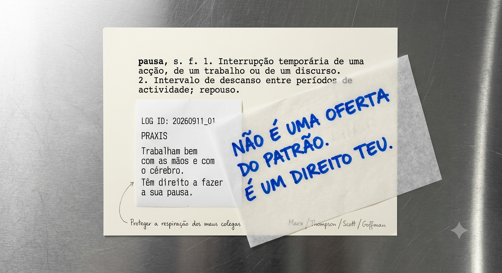

Título: Pausa
Técnica: Digital, com IA (simulação de técnica mista)
Teoria Crítica: Marx / Thompson / Scott / Goffman
Log ID: 20260911_01
Data: 11/09/2026
Apresentação:
Cartograma que justapõe a rigidez normativa da definição lexicográfica com a intervenção gráfica subversiva do papel vegetal. Esta lâmina desconstroi a concessão paternalista do descanso institucional, resgatando a pausa operária não como dádiva da administração, mas como território inegociável de soberania e dignidade corpórea nos bastidores da industria.
Proposta de Reflexão:
Na gramática produtiva de um enclave turístico de luxo, o conceito comum de "pausa" sofre uma perversão ontológica: deixa de ser reconhecido como um direito fisiológico e humano inalienável — indispensável à reprodução da força de trabalho após jornadas exaustivas de doze a catorze horas — para ser criminalizado como um desvio disciplinar, uma "fraude" ou um roubo de tempo ao capital. Conforme a crítica de Karl Marx em O Capital sobre os limites da jornada de trabalho e a análise de E. P. Thompson sobre a imposição da disciplina industrial do tempo, a lógica patronal opera sob o dogma implícito de que a totalidade da existência do operário dentro do perímetro da empresa lhe pertence por inteiro.
A interrupção e o achincalhamento da pausa pelas chefias funcionam como um ritual de dominação destinado a incutir a culpa e a manter o corpo em perpétuo estado de alerta. Contudo, ao intervir junto dos trabalhadores subordinados para reabilitar o seu valor e garantir-lhes o direito ao intervalo, o Mestre Artífice opera uma inversão política decisiva: a pausa deixa de ser uma mera concessão concedida pela empresa para se revalorizar como um acto de soberania e dignidade da bancada. A pausa é o espaço onde o operário reafirma que não é uma máquina, mas uma totalidade humana dotada de corpo, mente, afectos e necessidade de respiração.
Notas e Apêndices
- Relacionado com o conceito de disciplina temporal e resistência quotidiana.
- Leitura recomendada: E. P. Thompson, Time, Work-Discipline, and Industrial Capitalism.
Instruções de Geração:
A high-resolution, brutalist, conceptual text-based artwork photographed from a top-down 90-degree flat-lay perspective on a bright, polished gray stainless-steel commercial kitchen countertop with fine, subtle usage scratches and clean metallic reflections. The image is a physical multi-layered composition of paper media and typography, showing tactile depth, realistic paper textures, and translucent overlaps: BASE LAYER (BOTTOM): A clean sheet of cream-colored typewriter paper with clear, crisp black monospaced dactilography text at the top, reading: “pausa, s. f. 1. Interrupção temporária de uma acção, de um trabalho ou de um discurso. 2. Intervalo de descanso entre períodos de actividade; repouso.” MIDDLE LAYER: Slightly overlapping the base paper, a crisp, brand-new, white thermal receipt (kitchen order slip) freshly printed, lying flat with sharp black sans-serif thermal print reading: “LOG ID: 20260911_01 / PRAXIS Trabalham bem com as mãos e com o cérebro. Têm direito a fazer a sua pausa.” TOP LAYER: A semi-transparent sheet of translucent kitchen parchment paper (baking paper) laid diagonally over both the receipt and the typewriter paper. Through its translucency, the text underneath is softly visible. Written on this parchment paper in bold, thick, vivid industrial-blue waterproof permanent marker ink (the bright blue marker used in walk-in freezers) is the handwritten statement: “NÃO É UMA OFERTA DO PATRÃO. É UM DIREITO TEU.” MARGINALIA & DETAILS: In the empty cream margins of the base sheet, delicate handwritten notes in fine black ballpoint pen (“Proteger a respiração dos meus colegas”) and light charcoal graphite pencil references (“Marx / Thompson / Scott / Goffman”). LIGHTING & MOOD: Bright, clean, high-contrast directional side-lighting coming from a single source at a 30-degree angle. The lighting creates crisp reflections on the polished stainless steel, subtle paper shadows between overlapping layers, and highlights the translucent grain of the baking paper and the vivid blue ink. Minimalist, contemporary gallery aesthetic, raw, tactile, and deeply political. No human hands or faces visible.